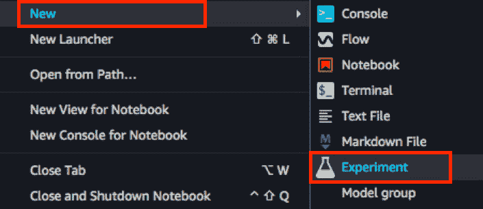
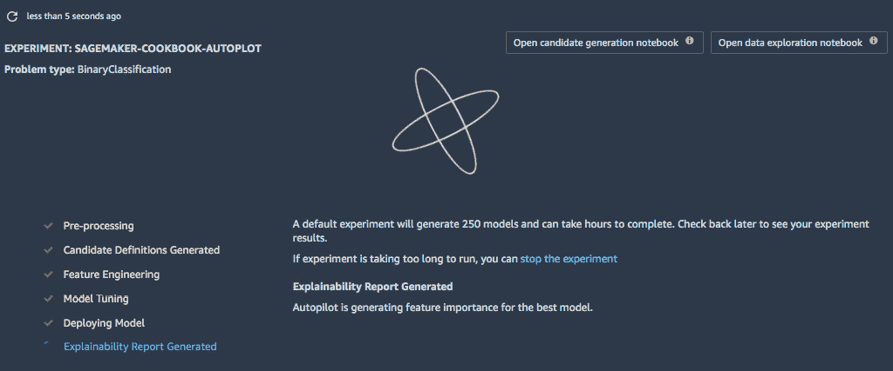

第六章:亚马逊SageMaker中的自动机器学习
自动化机器学习 ( AutoML )是自动化机器学习管道不同方面的过程，以帮助在短时间内构建和部署高质量的模型。这是通过自动化机器学习过程的不同阶段来实现的，例如特征工程、架构搜索和超参数优化。最初，AutoML的工具更多地关注于通过寻找模型的最佳超参数集来自动化耗时的超参数优化任务。然而，在过去的几年中，AutoML已经扩展到包括管道其他部分的自动化，包括数据清理、特征选择、模型选择等等:
图6.1–通过AutoML自动化的不同阶段和类型的任务
上图显示了一个简化的图表，显示了可以使用AutoML自动化的不同阶段和不同类型的任务。通过提供一个数据集和一些配置参数，我们将能够构建和部署一个高质量的模型，而无需编写任何代码。在本章中，我们将通过使用 SageMaker自动驾驶仪来详细了解如何在SageMaker中使用AutoML。这种能力允许机器学习实践者容易地训练和调整模型，即使具有有限的机器学习经验或专业知识。虽然初学者很容易使用， SageMaker Autopilot 允许过程透明和可重复。这使得专家能够理解、修改和替换自动化机器学习过程的不同部分。
我们将从介绍 SageMaker工作室开始，在这里我们将创建和管理我们的第一个 SageMaker自动驾驶实验。我们还将快速浏览一下自动驾驶仪实验快结束时生成的模型可解释性报告。稍后，在本章末尾，我们将了解如何使用和配置 Amazon SageMaker 的自动模型调整功能，它允许我们为我们的模型搜索一组最佳的超参数值。
我们将在本章中介绍以下配方:
- 入职 SageMaker工作室
- 使用包含随机值的附加列生成合成数据集
- 在 SageMaker工作室(控制台)中创建并监控 SageMaker自动驾驶仪实验
- 使用 SageMaker Python SDK 创建和监控 SageMaker自动驾驶仪实验
- 检查 SageMaker自动驾驶仪实验的结果和工件
- 使用SageMaker XGBoost 内置算法执行自动模型调整
- 分析自动模式调谐工作结果
一旦我们完成了本章中的配方，我们将更好地理解如何配置、管理和监控 Amazon SageMaker 的自动机器学习和自动模型调整功能。请注意，我们将快速浏览自动驾驶实验期间生成的模型可解释性报告，但我们将在 第7章使用SageMaker特征库、SageMaker Clarify和SageMaker模型监视器的启用ML可解释性中详细讨论这一点。
现在，让我们继续本章的食谱吧！
技术要求
要执行本章中的配方，请确保您具备以下条件:
- 一个亚马逊S3桶。
- 管理亚马逊SageMaker 和亚马逊S3 资源的权限，如果你使用的是带有自定义URL的 AWS IAM 用户。如果您使用的是root帐户，那么您应该能够继续本章中的食谱。但是，建议您以AWS IAM用户的身份登录，而不是在大多数情况下使用root帐户。有关更多信息，请随意查看https://docs . AWS . Amazon . com/IAM/latest/user guide/best-practices . html。
如果您还没有准备好这些先决条件，请随时查看准备亚马逊S3桶和线性回归实验的训练数据集第1章 ，使用亚马逊SageMaker 开始机器学习。
由于本章中的食谱涉及到一些代码，我们在本书的GitHub资源库中提供了这些笔记本:https://GitHub . com/packt publishing/Machine-Learning-with-Amazon-sage maker-Cookbook/tree/master/chapter 06。在开始本章的每个食谱之前，确保my-experiments/chapter06目录已经准备好。如果它还没有被创建，请现在就创建，因为这样可以在我们浏览本书中的每一个食谱时保持事物的有序性。
请点击以下链接查看动作视频中的相关代码:
入职SageMaker工作室
亚马逊SageMaker Studio 是一个完全集成的机器学习环境。有了SageMaker Studio，我们可以在这个环境中轻松使用SageMaker的其他特性和功能，例如 SageMaker自动驾驶、 SageMaker调试器和 SageMaker实验，使用其直观的用户界面。在这个菜谱中，我们将设置SageMaker Studio，这样我们就可以在后续的菜谱中使用它的不同特性和集成。我们假设这是您第一次使用SageMaker Studio，因此我们将在这个菜谱中设置执行角色和其他先决条件。
在在SageMaker Studio(控制台)配方中创建和监控SageMaker自动驾驶实验中，我们将看到使用 SageMaker Studio 创建自动驾驶实验是多么简单，而无需编写任何代码。现在，我们将专注于设置我们的环境，以便我们可以在后续的食谱中使用它。
注意
使用 SageMaker Studio 免费！通常，我们只根据计算和存储资源的使用情况为其付费。这意味着我们将为使用 SageMaker Studio 中不同选项和功能时启动的 SageMaker加工和培训工作支付费用。有关更多信息，请参考亚马逊 SageMaker Studio定价页面上的注释(https://docs . AWS . Amazon . com/sage maker/latest/DG/Studio-pricing . html)，以及定价页面上的详情(https://aws.amazon.com/sagemaker/pricing/)。
正在准备中
对于这个食谱，如果你使用一个拥有自定义UR的AWS IAM用户，你需要必要的权限来管理亚马逊SageMaker和T42亚马逊S3资源
怎么做 它…
这个食谱中的步骤集中在设置 SageMaker工作室上。让我们开始吧:
- In the search bar, type sagemaker and choose Amazon SageMaker from the search results:

图6.2–导航至SageMaker控制台
- In the SageMaker console, locate and click the Amazon SageMaker Studio link at the top left, as shown here:
图6.3–在导航页面 中找到Amazon SageMaker Studio
侧边栏帮助我们导航到SageMaker控制台的不同部分。点击亚马逊SageMaker Studio 应该会将我们重定向到显示亚马逊SageMaker Studio 仪表盘的页面。
- If this is your first time using SageMaker Studio in a specific region, you should see a screen similar to the following. Select Standard Setup and then choose AWS Identity and Access Management (IAM) as your Authentication method:
图6.4–快速入门与标准设置
- Under Permission, select Create a new role. This should open the Create an IAM role dialog box, which allows us to create an IAM role without having to leave the page:
图6.5–创建IAM角色
正如我们所看到的，我们将使用指定的默认配置。然后，点击创建角色按钮。我们应该会看到一条表明成功的消息！您创建了一个IAM角色。
注意
我们也可能决定使用现有的角色，而不是创建新的角色。
- Under Network and storage, select the existing default VPC and choose Public internet Only:
图6.6–网络和存储配置
在这里，我们有两个网络访问选项——仅公共互联网和仅VPC。选择仅VPC选项将为我们提供一个更安全的网络配置，但是选择仅公共互联网选项现在应该可以了，因为我们将处理样本数据集和实验
- Leave the other default configuration as-is and click the Submit button. We should see a Preparing SageMaker Studio notification, similar to what is shown in the following screenshot:
图6.7–准备SageMaker Studio通知消息
在SageMaker准备和配置资源时，我们会看到这个通知消息大约3-5分钟。过一会儿，我们应该会看到一条消息，说明 SageMaker Studio正在读取 y 。
- In SageMaker Studio Control Panel, click Add user:
图6.8–在SageMaker Studio控制面板中定位添加用户按钮
正如我们所见，添加用户按钮位于面板的右上角。
- Clicking Add user will open the Add user form, as shown in the following screenshot. Specify the preferred username. Then, under Execution role, choose Create a new role:
图6.9–添加用户表单
- When prompted to create an IAM role, select Any S3 bucket:

图6.10–为用户创建IAM角色
- 完成上一步后，我们应该会看到一条成功消息。点击提交按钮后d .T25】
- Once the user has been created, click Open Studio under SageMaker Studio Control Panel:
在这里，我们可以看到屏幕右侧的打开工作室按钮。点击此按钮后，将打开一个新标签。等待几分钟，等待 SageMaker Studio 界面加载:
图6.12–sage maker工作室
在这里，我们可以看到SageMaker工作室。我们将在工作原理……部分讨论 SageMaker工作室的不同部分。
- From the left sidebar, select the second icon, which will open the different options to manage GitHub repositories. Click the Clone a Repository button:
图6.13–管理GitHub存储库的不同选项
在这里，我们可以看到有三个按钮:
- 打开文件浏览器，它只是将我们导航回文件浏览器。
- 初始化一个库，使当前目录成为GitHub库，
- 克隆一个库，将一个库克隆到当前目录。
- In the Clone a repo dialog box, specify the Clone URI as https://github.com/PacktPublishing/Machine-Learning-with-Amazon-SageMaker-Cookbook.git in the text box. Click the CLONE button afterward:
图6.14–克隆一个回购
这里，我们有克隆一个回购对话框。在这一步，我们将克隆包含这本书的笔记本、源代码和文件的存储库。
- Right-click on the empty space below the Machine-Learning-with-Amazon-SageMaker-Cookbook directory and choose New Folder from the context menu:
图6.15–上下文菜单
这里，我们有右键单击后弹出的上下文菜单。
- 将新目录重命名为my-experiments:
图6.16–文件浏览器
- Amazon-SageMaker-Cookbook目录，其中包含从本书的GitHub存储库中克隆的存储库笔记本和文件。
- 我们创建的my-experiments目录。
这样，我们就可以在SageMaker Studio中制作下一组食谱了。现在，让我们看看这是如何工作的！
它是如何工作的…
在这个食谱中，我们建立我们的 SageMaker工作室环境。这个食谱由三部分组成:
- 使用SageMaker Studioon boarding的标准设置
- 创建用户
- 克隆Amazon-sage maker-CookbookGitHub存储库文件:
图6.17-sage maker工作室的组成部分
我们来讨论一下 SageMaker Studio 界面的不同部分。如前面的截图所示，左侧栏提供了不同的选项和工具来帮助我们管理我们的资源——文件、终端、内核、GitHub存储库、SageMaker Jumpstart和 SageMaker组件和注册表。主要工作区域集中在我们将用来管理实验的笔记本和终端上。我们可以在主工作区中有多个选项卡。屏幕右侧还有设置面板(未在图6.17 中显示)。在这里，我们可以在处理不同的资源(例如，试用组件)时调整表格和图表的属性。
让我们看看在使用 SageMaker Studio 和 SageMaker笔记本实例时的一些区别:
- 在 SageMaker Studio 中，我们不再需要在运行笔记本之前手动启动实例，因为这些实例是在后台自动管理和创建的。
- 在 SageMaker工作室内的笔记本即使关闭实例也可以查看。
- 在 SageMaker Studio内的笔记本可以与其他用户共享。关于这个话题的更多信息，请查看https://docs . AWS . Amazon . com/sage maker/latest/DG/notebooks-sharing . html。
- SageMaker Studio 内的笔记本不支持本地模式。另一方面，我们可以在运行于 SageMaker笔记本实例的笔记本内部使用本地模式。
除了这些之外，SageMaker的几个功能和特性可以在SageMaker Studio 中使用和管理，而无需我们编写一行代码。这些功能和特性包括 SageMaker自动驾驶仪、 SageMaker实验、 SageMaker特性存储、 SageMaker管道、 SageMaker澄清、 SageMaker调试器、 SageMaker模型监视器等等。
还有更多…
亚马逊SageMaker 的另一个功能叫做 SageMaker JumpStart ，可以通过点击文件菜单内选项列表下的新启动器选项，然后点击转到SageMaker JumpStart 进入，如下图所示。我们还可以使用左侧边栏中的JumpStart图标(倒数第二个图标)来浏览JumpStart页面:
图6.18-访问SageMaker JumpStart
我们将被重定向到包含不同解决方案、型号、笔记本电脑和其他参考资料的页面，如以下屏幕截图所示:
图6.19–SageMaker jump start
SageMaker JumpStart 通过向 SageMaker Studio 内的用户提供不同解决方案、模型、样本笔记本和资源的目录，加快了我们准备机器学习实验和工作流程的速度。有关 SageMaker JumpStart 的更多信息，请随意查看https://docs . AWS . Amazon . com/SageMaker/latest/DG/studio-jump start . html。
除了 SageMaker JumpStart ，我们还有 SageMaker Data Wrangler ，在这里我们可以导入、处理、转换和分析我们的数据。这个特性允许我们执行数据准备和特性工程，而无需编写一行代码。
注意
一旦您稍微使用过 SageMaker Data Wrangler ，您可能会意识到它也支持自定义转换和公式。这些允许我们在 SageMaker Data Wrangler 中使用PySpark、pandas和PySpark SQL代码，以获得更大的灵活性。
下图是 SageMaker Data Wrangler 的导出数据流页签。在这里，我们可以将准备好的流程和转换导出到笔记本和代码中，这允许我们定制这些流程和转换，并将其与任何现有的管道集成:
图6.20–sage maker数据辩论者
概括地说，我们可以利用此服务完成以下任务:
- 从亚马逊S3和其他数据源导入数据
- 创建和管理执行不同步骤和转换的数据流
- 转换数据
- 使用各种分析和可视化工具分析数据
- Export existing flows into notebooks or code files
注意
关于这个话题的更多信息，请查看以下链接:https://docs . AWS . Amazon . com/sage maker/latest/DG/data-wrangler . html。
使用包含随机值的附加列生成合成数据集
在这个配方中，我们将使用scikit-learn生成一个合成数据集。该数据集将作为本章实验的虚拟数据集:

图6.21–分类问题综合数据集的散点图
只需查看前面的散点图，我们就可以推断出我们正在为一个二元分类问题生成一个合成数据集。除了由scikit-learn的make_blobs()函数生成的主要预测器列a和b之外，数据集还将包括两列c和d，它们包含随机值，这些值向我们显示了使用这些附加列生成的模型可解释性报告的外观。该模型可解释性报告将在SageMaker Studio(控制台)配方中的创建和监控SageMaker自动驾驶仪实验中生成。
小费
由于我们将在这个配方中展示如何生成合成数据集的步骤，我们将有机会在以后调整这个配方，使其符合我们的需要。我们可以决定让这个数据集有(明显)更多的记录或更多的列，以查看这些调整如何影响自动机器学习和自动超参数优化作业的结果和配置。
准备就绪
怎么做……
我们将在运行于 SageMaker Studio 的笔记本电脑中运行以下步骤。在生成合成数据集之前，前几个步骤将着重于设置一些先决条件。让我们开始吧:
- Navigate to the my-experiments/chapter06 directory inside SageMaker Studio. Feel free to create this directory if it does not exist yet:
图6.22–我的实验/第6章目录
在这里，我们有我的实验/第六章目录。继续之前，双击chapter06目录。
- Create a new notebook using the Python 3 (Data Science) kernel inside the my-experiments/chapter06 directory and rename it with the name of this recipe (that is, Generating a synthetic dataset with additional columns containing random values):
图6.23–创建新笔记本
在这里，我们可以看到如何从文件菜单创建一个新的笔记本。当提示使用内核时，选择Python 3(数据科学)。
注意
如果这是我们在 SageMaker Studio 中的第一台笔记本，内核启动可能需要3-5分钟。我们需要等待笔记本运行的实例准备就绪。在完成本章的食谱后，可以在 SageMaker Studio 左侧栏的运行终端和内核窗格中随意关闭运行实例。这将有助于降低和管理运行笔记本电脑时产生的成本。如需了解更多信息，请随时查看以下链接:https://docs . AWS . Amazon . com/sage maker/latest/DG/notebooks-usage-metering . html。
- 使用scikit-learn中的make_blobs()函数生成合成数据集。注意，我们在下面几行代码中将样本数设置为5,000】
- 验证合成数据集中的样本数量。我们将在下一步中使用n_samples变量为另外两列生成随机值:
n_samples = len(X)
- 为我们将包含在数据集中的另外两列生成随机值。在下面的代码块中，我们使用来自 NumPy 的random.randint()函数来生成长度等于n_samples:
import numpy as np r1 = np.random.randint(low=-100, high=100, size=(n_samples,)).astype(int) r2 = np.random.randint(low=-100, high=100, size=(n_samples,)).astype(int)
的随机值 - Prepare a DataFrame called all_dataset. It will contain the target column named label and four predictor columns named a, b, c, and d:
import pandas as pd all_dataset = pd.DataFrame( dict(label=y, a=X[:,0], b=X[:,1], c=r1, d=r2)) print(all_dataset)
这应该给我们一个数值的数据框架，类似于f ol lowing 截图中显示的内容:
图6.24–all _ dataset数据框架
- Generate a plot using the following lines of code. Here, we grouped the points by their label values using the groupby() function:
from matplotlib import pyplot colors = {0:'red', 1:'blue'} fig, ax = pyplot.subplots() grouped = all_dataset.groupby('label') for key, group in grouped: group.plot(ax=ax, kind='scatter', x='a', y='b', label=key, color=colors[key]) pyplot.show()这里，我们可以看到使用Matplotlib生成的散点图:
图6.25–分类问题综合数据集的散点图
这是all _ dataset的散点图，显示了使用标签列值分组的点。
现在我们已经生成了数据集，我们需要将其分为训练集、验证集和测试集，然后再将它们上传到S3存储区:
- 使用train_test_split()函数两次来获取训练、验证和测试数据集:
from sklearn.model_selection import train_test_split train_val, test = train_test_split( all_dataset, test_size=0.2, random_state=0) training, validation = train_test_split( train_val, test_size=0.25, random_state=0)
- 如果不存在，使用mkdir Bash命令生成tmp目录:
!mkdir -p tmp
- 指定将存储数据的S3存储桶的名称和前缀。请确保您用我们在准备亚马逊S3桶和线性回归实验的训练数据集第一章 、使用亚马逊SageMaker开始机器学习 :
s3_bucket_name = "<insert bucket name here>" prefix = "chapter06/input"
中创建的桶的名称替换了的值 - 使用to_csv()函数将训练、验证和测试数据帧的内容保存到csv文件中。注意，对于这一步，我们已经将header的值设置为True:
training.to_csv('tmp/training_data.csv', header=True, index=False) validation.to_csv('tmp/validation_data.csv', header=True, index=False) test.to_csv('tmp/test_data.csv', header=True, index=False) - 使用aws s3 cp命令将CSV文件复制到s3目的地。执行此步骤后，您可以使用AWS控制台S3用户界面验证文件是否成功上传到目标S3存储桶和路径:
!aws s3 cp tmp/training_data.csv s3://{s3_bucket_name}/{prefix}/training_data.csv !aws s3 cp tmp/validation_data.csv s3://{s3_bucket_name}/{prefix}/validation_data.csv !aws s3 cp tmp/test_data.csv s3://{s3_bucket_name}/{prefix}/test_data.csv - 再次使用to_csv()函数从训练、验证和测试数据帧生成3个csv文件。这一次，注意文件名是不同的，并且头参数值被设置为假:
training.to_csv('tmp/training_data_no_header.csv', header=False, index=False) validation.to_csv('tmp/validation_data_no_header.csv', header=False, index=False) test.to_csv('tmp/test_data_no_header.csv', header=False, index=False) - 最后，使用aws s3 cp命令将CSV文件复制到s3目的地:
!aws s3 cp tmp/training_data_no_header.csv s3://{s3_bucket_name}/{prefix}/training_data_no_header.csv !aws s3 cp tmp/validation_data_no_header.csv s3://{s3_bucket_name}/{prefix}/validation_data_no_header.csv !aws s3 cp tmp/test_data_no_header.csv s3://{s3_bucket_name}/{prefix}/test_data_no_header.csv - Use the %store magic to store the values of s3_bucket_name and prefix:
%store s3_bucket_name %store prefix
我们将在随后的菜谱中使用这些值，以便我们可以轻松地指定并提供我们在该菜谱中上传的CSV文件的S3路径。
- Finally, print the S3 path of the CSV file containing the training data:
f"s3://{s3_bucket_name}/{prefix}/training_data.csv"将运行此单元格后的输出(不带引号)复制到剪贴板；我们将在中使用它，在SageMaker Studio(控制台)配方中创建和监控SageMaker自动驾驶实验。
它是如何工作的…
在这个配方中，我们已经生成了一个可以用于分类问题的合成数据集。该配方包括三个主要步骤——使用scikit-learn和NumPy生成合成数据，使用Matplotlib进行数据可视化，以及将包含数据集的CSV文件上传到S3。
让我们更详细地看看这些步骤:
- 合成数据生成:我们使用make_blobs()函数生成一个数据集，它有三列，包括一个目标列。然后，我们生成包含随机值的两列，并将它们与合成数据集合并。在本章的后面，我们将看到 SageMaker Autopilot 仍然会提出一个利用前两列值的模型，主要是预测目标列值。
- Data Visualization: Given that columns c and d only contain random values, we simply used the values of the a and b columns, along with the target label column, in the scatterplot chart. What are our initial findings after looking at the chart? When the value of a is near 5 and the value of b is near 0, the target value (label) is most likely 1. This, of course, is an oversimplification and is just one of the remarks we can make for now.
注意
在现实生活的数据集和例子中，a和b可以很容易地映射到一个或多个预测变量。例如，使用乳房肿块图像的属性(例如，周长平均值、面积平均值和凹度最差值)来检测肿瘤是良性还是恶性。除此之外，c和d可以很容易地映射到一个或多个预测变量，这些预测变量可能不一定对目标变量有显著贡献。
- 上传CSV文件:最后，我们上传了两个版本的CSV文件:一个版本不带头文件，另一个版本带头文件。当我们稍后运行自动驾驶实验时，我们将使用包含头文件的训练CSV文件。在本章的其他一些食谱中，我们将使用不包含标题的测试数据集。
还有更多……
让我们看看可以对这个食谱进行的一些调整，以产生这个数据集的变体:
- 我们可以(显著地)生成更多的记录和更多的预测列，然后测试这些调整如何影响我们将在自动化机器学习实验中执行的步骤的配置。
- 我们还可以通过在调用make_blobs()函数时修改centers和cluster_std的参数值，将机器学习问题类型更改为多类分类问题。
- 我们还可以通过替换目标列和用于生成目标列的步骤，将机器学习问题类型更改为回归问题。
在运行AutoML作业时，我们很可能会看到使用不同的型号系列。除此之外，一旦我们做出这些调整并重新运行实验，我们可能会在自动驾驶仪实验生成的笔记本中看到一些差异。记住这些，让我们利用这个合成数据集！
在SageMaker Studio(控制台)中创建和监控SageMaker自动驾驶仪实验
在这个配方中，我们将使用亚马逊SageMaker自动驾驶仪使用我们之前生成的合成数据集来执行 AutoML 。我们将简单地传递训练数据集CSV文件，以及一些配置参数值。这些应该足以让我们的自动驾驶实验运行起来。
使用 SageMaker自动驾驶仪，机器学习过程的不同步骤将自动执行。这些包括预处理、特征工程和模型调整。最酷的是，即使这个过程是完全自动化的，我们仍然可以选择使用生成的笔记本来查看幕后发生的事情。这允许经验丰富的专业人员在需要时修改生成的 d机器学习代码。
做好准备
该配方延续自生成合成数据集后的任何配方，该数据集具有包含随机值的附加co 列配方。
怎么做……
本配方中的步骤集中在使用SageMaker Studio控制台(UI)创建和监控一个sage maker Autopilot实验。让我们开始吧:
- Create a new Autopilot experiment by clicking the File menu and choosing Experiment under the New submenu:
图6.26–从文件菜单创建新实验
- Specify the Experiment name value. Feel free to specify your preferred experiment name. You can set the experiment name so that it follows the convention of sagemaker-cookbook-autopilot:
这里，我们有自动驾驶实验设置表单，在这里我们可以指定新实验的配置。
- Under Connect your Data, select Enter S3 bucket location and then set the S3 bucket address to the location of the training data. Make sure that you replace the value of <S3 bucket name> with the name of the bucket we created in the Preparing the Amazon S3 bucket and the training dataset for the linear regression experiment recipe of Chapter 1, Getting Started with Machine Learning Using Amazon SageMaker:
s3://<S3 bucket name>/chapter06/input/training_data.csv
- Under Output data location (S3 bucket), select Enter S3 bucket location:
s3://<s3 bucket name>/chapter06/output
图6.28–连接您的数据
这里，我们有连接您的数据表单，其中的字段用首选值更新。
- Create and specify label in the Target field. Make sure that you click Create "label" after typing label, as shown in the following screenshot:
图6.29–指定目标字段值
- 当出现自动部署模型的选项时，只需将设置保留为上的。
- 在高级设置下，为以下字段指定以下值:
- 最大试用运行时间(秒) : 3600
- 以秒为单位的最大作业运行时间 : 600
- 最大候选数 : 12(如下截图所示):
图6.30–创建实验按钮
- Finally, click the Create Experiment button. Clicking this button will start the Autopilot experiment:
图6.31-自动驾驶仪实验已经开始
前面的截图显示了我们的屏幕在启动自动驾驶实验后的最初几分钟应该是什么样子。在等待的同时，让我们继续下去，以便我们可以检查一些已经启动的处理作业和由自动驾驶实验生成的笔记本。
重要说明
确保删除实验完成后生成的推断端点。您将为推理端点的运行时间付费。
- In the AWS Console, navigate to the SageMaker Processing Jobs page to see the processing jobs that were automatically started by the Autopilot experiment:
图6.32–导航至处理作业页面
这应该会将我们重定向到处理作业页面，在这里我们可以看到由Autopilot实验启动的具有b ee n的处理作业:
图6.33–处理作业
在这里，我们可以看到 SageMaker正在处理已经由自动驾驶实验启动的作业。请随意查看已经执行的作业，以及这些作业中使用的处理图像。一旦实验完成，我们将看到各种各样的 SageMaker处理作业，包括数据分离器、管道推荐器和模型可解释性报告生成器作业。
- After about 10 to 15 minutes, the Data Exploration and Candidate Generation Notebooks should have been generated. Once the two buttons shown in the following screenshot appear in the Autopilot experiment tab, click the Open data exploration notebook button:
图6.34–打开数据探索笔记本按钮
这应该会打开亚马逊SageMaker自动驾驶数据探索笔记本，类似于下面的截图所示:
图6.35-自动驾驶仪数据探索笔记本
- In the Autopilot experiment tab, click the Open candidate generation notebook button:
图6.36–打开候选人生成笔记本按钮
这应该会打开亚马逊SageMaker自动驾驶候选人定义笔记本页面，如下所示:
图6.37-自动驾驶候选人定义笔记本
- After a few more minutes, the best model will be deployed. This should be reflected in the quick progress report, as shown in the following screenshot:
图6.38–模型已经部署
此时，可解释性报告正在生成。稍后我们将看到这是什么样子以及它提供了什么信息。我们还应该看到一个正在SageMaker控制台中运行的 SageMaker处理作业，它正在生成这个报告。
- After a few more minutes, the Autopilot experiment should be completed and we will be able to inspect the results. Right-click on the row of the "best" tuning job trial and choose Open in model details from the list of options in the context menu, as shown here:
图6.39–检查最佳调优作业试验的结果
这里，我们可以看到，对于自动驾驶仪实验产生的最佳模型，目标客观指标(F1得分)值约为0.86234。此客观指标值对应于培训作业运行时自动计算的验证:f1指标值。我们应该看到模型的细节，包括模型可解释性报告的摘录，如下面的截图所示:
图6.40–模型可解释性报告
在这里，我们可以看到，列a和b被认为比列c和d更重要。这是意料之中的，因为列c和d只包含随机值，而这些随机值不会对预测的标签值产生影响。我们还可以看到 XGBoost 是用来产生最佳模型的算法。此外，SageMaker Autopilot自动检测到我们正在处理一个二元分类问题，而无需我们在启动Autopilot实验时指定它。
注意
我们将在第七章使用SageMaker特征库 、SageMaker Clarify和SageMaker模型监视器的启用ML可解释性中详细了解模型可解释性和特征重要性。
- 最后，向下滚动到页面底部，查看最佳模型的指标和参数属性:
图6.41-指标
请随意查看车型详情页面上的其他详情。这个包括实验中使用和产生的输入和输出工件，以及网络配置设置。
重要说明
确保在运行该实验后删除端点。导航到SageMaker控制台中的端点页面，删除在g实验中创建的端点。
让我们看看这是如何工作的！
它是如何工作的…
在这个食谱中，我们使用 SageMaker Autopilot 来处理我们之前生成的数据集，然后自动执行机器学习过程的不同阶段，以得出最佳模型。
SageMaker Autopilot 为我们自动化了以下阶段:
- 数据分析:计算并收集不同的统计数据，帮助机器学习从业者更好地理解数据。
- 问题定义:根据提供的数据集CSV文件中的目标列确定问题类型(如线性回归、二元分类或多类分类)。
- 数据集模式检测:确定所提供的数据集CSV文件中每个列/变量的数据类型。
- 候选定义生成:生成多个候选管道定义。每个候选管道由一个数据处理作业和一个训练作业组成。
- 数据预处理和特征工程:在训练步骤之前对数据进行处理和准备。
- 算法选择:根据问题类型，选择用于训练和调整的算法。目前，SageMaker Autopilot在训练和调整模型时支持线性学习器XGBoost的用法和多层感知器(MLP) 深度学习算法。注意，自动驾驶仪选择用于训练步骤的算法。
- 模型调谐:对不同的模型进行训练和调谐。在此阶段，SageMaker的自动模型调整功能用于寻找目标模型的最佳超参数，这将导致使用最佳客观指标。
- 部署:最佳模型被部署到一个推理端点。最佳模型的选择基于客观指标的值(例如，F1分数)。
- 可解释报告生成:为最佳模型生成模型可解释报告。
当使用自动机器学习解决方案和功能时，例如自动驾驶和自动模型调整，需要注意的是通常，用于生产模型的训练和调整作业数量越多，我们获得高(更)质量模型的机会就越高。当然，这意味着我们需要等待更长时间，因为我们必须等待每个培训工作完成。也就是说，它是关于在初始化自动驾驶仪实验时找到一组正确的配置参数(以秒计的最大试验运行时间、以秒计的最大作业运行时间和最大候选值)。
注意
如果这是你第一次使用AutoML解决方案，你可能会想这是否会取代数据科学家，因为我们可以在技术上执行端到端的机器学习实验和部署，而无需了解任何机器学习知识。这个问题的答案是“不会很快”，因为我们应该将AutoML解决方案视为有助于帮助和加快数据科学家和机器学习实践者工作的工具和服务。AutoML允许他们通过修改自动驾驶作业的生成脚本和笔记本，更多地关注项目的复杂和定制需求。
现在，让我们以编程方式执行一个类似的AutoML实验。
使用SageMaker Python SDK创建和监控SageMaker自动驾驶实验
在之前的配方中，我们使用 SageMaker Studio 界面创建并监控了一个 SageMaker自动驾驶仪实验。在这个菜谱中，我们将使用 SageMaker Python SDK 以编程方式创建和监控一个类似的AutoML实验。使用 SageMaker Python SDK ，我们将能够获得自动驾驶实验的属性，比如自动驾驶作业的主要和次要状态。一旦实验的某些阶段已经完成，我们还将获得存储不同工件和文件的S3路径。在运行超参数优化作业后，我们还将使用best_candidate()函数来检查“最佳偷拍 ate”的属性。
准备就绪
该配方延续自生成合成数据集后的任何配方，并增加了包含随机值配方的 l列。
怎么做……
这个配方中的步骤主要是使用 SageMaker Python SDK 来创建和管理一个 SageMaker Autopilot 实验。让我们开始吧:
- Navigate to the my-experiments/chapter06 directory inside SageMaker Studio. Feel free to create this directory if it does not exist yet:

图6.42–我的实验/第6章目录
在这里，我们有我的实验/第六章目录。继续之前，双击chapter06目录。
- Create a new notebook using the Python 3 (Data Science) kernel inside the my-experiments/chapter06 directory and rename it with the name of this recipe (that is, Creating and monitoring a SageMaker Autopilot experiment using the SageMaker Python SDK):

图6.43–创建新笔记本
在这里，我们可以看到如何从文件菜单创建一个新的笔记本。当提示使用内核时，选择 Python 3(数据科学)。
- Use the %store magic to load the values of s3_bucket_name and prefix:
%store -r s3_bucket_name %store -r prefix
- 指定输入路径、输出路径和最大候选数:
s3_data_source = \ f"s3://{s3_bucket_name}/{prefix}/training_data.csv" output_target = f"s3://{s3_bucket_name}/{prefix}/output" max_candidates = 25 - 初始化一几个先决条件，比如会话和角色:
import sagemaker session = sagemaker.Session() role = sagemaker.get_execution_role()
- Initialize the Autopilot experiment by running the following block of code:
from sagemaker.automl.automl import AutoML experiment = AutoML( role=role, sagemaker_session=session, target_attribute_name="label", output_path=output_target, max_candidates=25, max_runtime_per_training_job_in_seconds=1000, total_job_runtime_in_seconds=6000 )
注意total_job_runtime_in_seconds、max_candidates和max _ runtime _ per _ training _ job _ in _ seconds的参数值决定了自动驾驶仪实验将持续多长时间。一旦达到这些值中的一个，自动驾驶实验也将结束。
- Use the fit() function to start the Autopilot job:
experiment.fit(inputs=s3_data_source, logs=False, wait=False)
- Import the pprint and sleep functions:
from pprint import pprint from time import sleep
- Use the following lines of code to check the status and wait for the experiment to complete:
%%time status = "InProgress" while status == "InProgress": response = experiment.describe_auto_ml_job() status = response['AutoMLJobStatus'] secondary_status = response['AutoMLJobSecondaryStatus'] print(f"{status} - {secondary_status}") sleep(15)
这将为我们提供一组日志，类似于下面的屏幕截图所示:
图6.44-显示自动驾驶作业主要和次要状态的日志
由于此可能需要大约40分钟才能完成，请在等待时继续下一步。在这里，我们应该看到主要和次要状态文本按以下顺序更改:InProgress - Starting、InProgress - AnalyzingData、InProgress - FeatureEngineering、InProgress - ModelTuning、in progress-generatingeexplainabilitreport和Completed - Completed。
- Navigate to the Components and registries pane by clicking the last icon in the left sidebar, as shown here:
图6.45-定位自动驾驶仪实验
- Right-click on the Autopilot experiment that we initiated using the SageMaker Python SDK:
图6.46描述了AutoML作业
之后，从上下文菜单的选项列表中选择描述AutoML作业:
图6.47–自动工作屏幕
- Once the Autopilot job has finished running, we can compute the total by running the following block of code:
delta = response['EndTime'] - response['CreationTime'] total_minutes = int(delta.total_seconds() / 60) total_minutes
这将产生一个接近35的值。
- Let's check the S3 location of the generated output artifacts:
artifacts = response['AutoMLJobArtifacts'] artifacts
这应该会给我们一个类似如下的字典:
图6.48–包含生成的工件位置的字典
- 接下来，使用下面几行代码复制生成的工件:
for s3_path in list(artifacts.values()): !aws s3 cp {s3_path} tmp/.
- Get the best candidate using the best_candidate() function:
best = experiment.best_candidate() best
这应该会给我们一个结构类似如下的字典:
图6.49-包含“最佳候选”元数据的字典
在这里，我们可以看到best_candidate()函数的结果。
- Check the objective metric value of the best candidate:
best['FinalAutoMLJobObjectiveMetric']
这个应该给我们一个类似于{'MetricName': 'validation:f1 '，' Value': 0.87288}的值的字典。
- Use the %store magic to save the name of the Autopilot job:
autopilot_job_name = response['AutoMLJobName'] %store autopilot_job_name autopilot_job_name
这应该允许我们稍后检查自动驾驶仪实验的细节。
注意
如果我们想要部署自动驾驶实验的最佳模型，执行部署就像使用autopilot_job.deploy(...).这个deploy()函数应该与估计器或模型对象的deploy()函数具有相同的参数——端点名称、实例_ 类型和初始实例计数。
现在，让我们看看这是如何工作的！
它是如何工作的…
在这个配方中，我们使用了来自 SageMaker Python SDK 的AutoML类来初始化 SageMaker Autopilot 实验对象。正如我们所见，使用 SageMaker Python SDK 来运行自动驾驶作业非常简单。我们只需传递一组配置参数，类似于我们在SageMaker Studio(控制台)配方中的创建和监控SageMaker自动驾驶仪实验。
我们在这个配方中使用的完成工作的主要语句包括:
- 初始化AutoML对象并指定自动驾驶作业的属性:
experiment = AutoML(...)
- 使用fit()函数开始实验:
experiment.fit(..., wait=False)
- 使用describe_auto_ml_job()函数检查AutoML作业的进度:
experiment.describe_auto_ml_job()
AutoML 作业可能需要一些时间才能完成(例如，> 30分钟)。describe_auto_ml_job()函数可以方便地让我们知道AutoML作业的状态。
还有更多…
注意，我们可以使用来自 SageMaker Python SDK 的ExperimentAnalytics类来帮助我们分析自动驾驶实验的结果。以下是一个快速示例，说明了如何获得包含加工和培训工作详细信息的数据框架:
%store -r autopilot_job_name
experiment_name = f"{autopilot_job_name}-aws-auto-ml-job"
from sagemaker.analytics import ExperimentAnalytics
from sagemaker import Session
analytics = ExperimentAnalytics(
sagemaker_session=Session(),
experiment_name=experiment_name
)
analytics.dataframe()
这将为我们提供一个数据框架，其值如下所示:
图6.50-包含实验分析数据的数据框
有关这个主题的更多信息，请随意查看第五章 、的实验分析与SageMaker实验配方、有效管理机器学习实验。
检查SageMaker自动驾驶仪实验的结果和工件
在之前的配方中，我们使用了 SageMaker Python SDK 来启动和监控一个 Autopilot 作业，以及在AutoML作业完成运行后部署最佳模型。
在本食谱中，我们将检查由SageMaker自动驾驶仪实验生成的笔记本:
- 数据探索笔记本
- 候选人定义笔记本
SageMaker Autopilot 已经生成了这些笔记本，以帮助我们了解AutoML作业内部正在发生的事情。这些笔记本电脑允许数据科学家和机器学习实践者通过修改和定制这些笔记本电脑中他们认为合适的部分来建立在自动驾驶实验的基础上。
最后，我们将快速查看一下S3输出路径中存储了什么，现在自动驾驶作业已经执行完毕。
做好准备
该配方延续了使用SageMaker Python SDK 配方创建和监控 SageMaker Auto 试点实验。
怎么做……
接下来的几个步骤假设我们刚刚使用SageMaker Python SDK 方法完成了创建和监控SageMaker自动驾驶仪实验，并且AutoML作业工件已经被复制到tmp目录。让我们开始吧:
- Inside the tmp directory, we will find two files called SageMakerAutopilotCandidateDefinitionNotebook and SageMakerAutopilotDataExplorationNotebook. Open the tmp directory. You will see the downloaded CSV files and the generated Autopilot notebooks, as shown here:
- Open the Data Exploration Notebook:
图6.52-生成的数据探索笔记本
在这里，我们可以看到数据探索笔记本。请注意，该笔记本中的电池可以像任何普通的第 号tebook电池一样运行，这允许我们检查每一步后的结果。
- Open the Candidate Definition Notebook:
图6.53–候选人定义笔记本
这里，我们有候选人定义笔记本。注意，本笔记本中的单元格可以像任何普通的 电子书单元格一样执行，这允许我们检查每一步后的结果。
- Scroll down and read through the sections and steps in the notebook:
图6.54–候选人定义笔记本中的其他步骤
在这里，我们可以看到候选人定义笔记本中的其他步骤。候选定义笔记本通常比数据探索笔记本长，因为它包含不同的预处理步骤和机器学习选择步骤。
- Scroll further down and check out the algorithms and hyperparameter range configuration. This will be used in the automated hyperparameter tuning jobs:
图6.55–候选定义笔记本中定义的超参数范围
- In the AWS Console, use the search bar to navigate to the S3 console:
图6.56–导航到S3控制台
在搜索栏中键入s3，然后选择 S3(云中的可扩展存储)。
- 导航到包含输出工件的S3桶(即
/chapter06/output/…>):
图6.57-S3输出路径包含自动驾驶作业产生的输出伪像
在这里，我们应该找到几个包含自动驾驶作业产生的不同工件的文件夹。这些包括数据处理器模型、文档、预处理数据、sagemaker-automl-candidates、转换数据、调整和验证。
现在，让我们看看这是如何工作的！
工作原理…
在这份食谱中，我们仔细研究了自动驾驶实验中自动生成的笔记本。这些生成的笔记本有助于使流程尽可能透明。
让我们详细讨论一下这些笔记本的内容:
- 数据探索笔记本:这个笔记本帮助机器学习从业者识别数据集中的问题。它是在AutoML作业的第一阶段(即分析阶段)生成的。它有两个主要部分:
- 数据集样本:此部分显示数据集的一个小样本。
- 列分析:此部分显示缺失值的百分比、计数统计和描述性统计。
- 候选定义笔记本:这个笔记本包含建议的机器学习算法，以及超参数范围。它还包含培训开始前建议的预处理步骤。它有四个主要部分:
在这个菜谱中，我们还快速地看了一下包含由自动驾驶作业生成的工件的S3桶。图6.59 显示了包含不同输出工件的几个文件夹(前缀):
- data-processor-models/:该文件夹包含数据处理模型。
- documentation/:这个文件夹包含模型可解释性报告。
- 预处理数据/:此文件夹包含预处理数据，包括拆分为CSV文件块(例如，chunk_20.csv和chunk_21.csv)的定型和验证数据集。
- sagemaker-automl-candidates/:该文件夹包含生成的笔记本(即sagemakerautopilotopcandidatediationnotebook . ipynb和sagemakerautopilotdataexplorationnotebook . ipynb)。
- transformed-data/:该文件夹包含来自预处理数据/的CSV文件的相应转换版本。
- tuning/:该文件夹包含由调优作业生成的model.tar.gz文件中的模型工件。
- validations/:该文件夹包含output_validation文件。
关于这个话题的更多信息，请随意查看以下链接:https://docs . AWS . Amazon . com/sage maker/latest/DG/auto pilot-automate-model-development . html。
使用SageMaker XGBoost内置算法执行自动模型调整
超参数是机器学习算法的属性，影响算法如何工作和行为。在训练步骤中，算法不会学习和修改这些属性，正是这一关键特性使其不同于参数。当在训练步骤中处理训练数据时获得模型的参数时，必须在训练作业开始之前指定超参数。超参数优化是寻找产生最佳模型的最佳配置和超参数值组合的过程。
也就是说，自动模型调整使用不同的超参数配置运行多个训练任务，以寻找模型的“最佳”版本。
注意
在这种情况下，最佳模型是产生最佳客观度量的模型。这个客观的衡量标准取决于正在解决的问题。
在这个菜谱中，我们将使用 Amazon SageMaker 的自动模型调整功能，通过搜索超参数值的最优集合来寻找“最佳” XGBoost 二元分类器模型。我们将使用我们在本章前面评分的合成数据集作为fit()函数的输入数据集。
做好准备
该配方继续从生成一个合成数据集合，其中包含随机值配方的附加列。
怎么做……
该配方中的第一组步骤着重于在运行自动模型调整作业之前准备前必要条件。让我们开始吧:
- Navigate to the my-experiments/chapter06 directory inside SageMaker Studio. Feel free to create this directory if it does not exist yet:
图6.58–我的实验/第6章目录
在这里，我们有我的实验/第六章目录。继续之前，双击chapter06目录
- Create a new notebook using the Python 3 (Data Science) kernel inside the my-experiments/chapter06 directory and rename it to the name of this recipe (that is, Performing Automatic Model Tuning with the SageMaker XGBoost built-in algorithm):
图6.59–创建新笔记本
- 导入、加载和准备自动模型调整工作的一些先决条件。与前面的方法类似，一些先决条件包括我们的区域、boto3客户机、SageMaker会话和SageMaker执行角色。我们还将在下面的代码块中从 SageMaker Python SDK 导入tuner】
- 使用%store magic 来加载s3_bucket_name和前缀的变量值:
%store -r s3_bucket_name %store -r prefix
- 准备将指向本配方中使用的S3输入和输出位置的变量:
training_s3_input_location = \ f"s3://{s3_bucket_name}/{prefix}/training_data_no_header.csv" validation_s3_input_location = \ f"s3://{s3_bucket_name}/{prefix}/validation_data_no_header.csv" test_s3_input_location = \ f"s3://{s3_bucket_name}/{prefix}/test_data_no_header.csv" training_s3_output_location = \ f"s3://{s3_bucket_name}/output/" - 使用 SageMaker Python SDK 中的retrieve()函数获取指定版本的 XGBoost 内置算法的容器URI:
from sagemaker.image_uris import retrieve container = retrieve('xgboost', region, version="0.90-2") container
- 使用training input指定输入数据的内容类型为text/csv:
from sagemaker.inputs import TrainingInput s3_input_training = TrainingInput( training_s3_input_location, content_type="text/csv") s3_input_validation = TrainingInput( validation_s3_input_location, content_type="text/csv")
- 初始化评估器对象:
estimator = sagemaker.estimator.Estimator( container, role, instance_count=1, instance_type='ml.m5.large', output_path=training_s3_output_location, sagemaker_session=session)
- 指定几个超参数，我们将在不同的培训工作中保持不变:
estimator.set_hyperparameters( eval_metric='auc', objective='binary:logistic', num_round=50)
- Specify the hyperparameter range configuration for eta, min_child_weight, and max_depth. As you can see, we are using the ContinuousParameter and IntegerParameter classes to specify the configuration of the continuous and discrete hyperparameters, respectively:
hyperparameter_ranges = { 'eta': tuner.ContinuousParameter(0, 1), 'min_child_weight': tuner.ContinuousParameter(3, 7), 'max_depth': tuner.IntegerParameter(2, 8) }注意
请注意，这个超参数配置只是一个例子。如果您认为合适，可以随意修改这个hyperparameter_ranges配置。
- Specify the value of objective_metric_name:
objective_metric_name = 'validation:auc'
- 初始化HyperparameterTuner对象。我们在前面的步骤中指定了估计量、客观度量名称和超参数范围配置，作为初始化超参数调谐器对象的三个参数:
hyperparameter_tuner = tuner.HyperparameterTuner( estimator, objective_metric_name, hyperparameter_ranges, max_jobs=20, max_parallel_jobs=3)
- 使用fit()函数启动超参数调整工作。请注意，我们已经将wait值设置为False，这样我们就可以在优化作业运行时继续下面的步骤:
hyperparameter_tuner.fit( {'train': s3_input_training, 'validation': s3_input_validation}, include_cls_metadata=False, wait=False ) - Use the describe_hyper_parameter_tuning_job() function to check the status of the tuning job:
job_name = hyperparameter_tuner.latest_tuning_job.job_name response = client.describe_hyper_parameter_tuning_job( HyperParameterTuningJobName=job_name ) response['HyperParameterTuningJobStatus']
一旦调优作业运行完毕，我们应该会得到一个Completed值。在优化作业运行时，我们应该会获得一个正在进行的值。
重要说明
随意到使用SageMaker控制台检查由超参数调整作业启动的培训作业的状态和进程。如果在运行这些培训作业时出现错误，我们将能够在 CloudWatch日志中查看详细信息并解决问题。
- Use pprint() to display the content of response:
from pprint import pprint pprint(response)
这将为我们提供一个嵌套的值字典，类似于下面的屏幕截图所示:
图6.60–调用describe _ hyper _ parameter _ tuning _ job()后的结果
- Finally, get the name of the tuning job and use the %store magic to save its value:
r = response tuning_job_name = r['HyperParameterTuningJobName'] %store tuning_job_name tuning_job_name
我们将在稍后的分析自动模型调整作业结果配方中使用调整作业名称的值。
注意
如果我们想要部署自动模型调优作业的最佳模型，那么使用hyperparameter_tuner.deploy(...).此deploy()函数应该具有与估计器或模型对象的deploy()函数相同的参数-endpoint _ name、instance_type和initial_instance_count。
现在，让我们看看这是如何工作的！
工作原理……
亚马逊SageMaker 的自动模型调整功能帮助我们寻找模型的最佳版本。这是通过自动搜索模型超参数的优化值来实现的:
图6.61–自动模型调整的工作原理
如上图所示，SageMaker的自动模型调整功能包括使用多个训练任务测试不同的超参数配置值，以得出最佳模型。基于在执行训练作业时计算的每个模型的客观度量值来选择最佳模型。让我们详细讨论一下这个过程:
- 准备超参数范围配置:我们提供我们希望调整和优化的每个超参数的值范围。在这个配方中，我们通过提供最小值和最大值来指定eta、min_child_weight和max_depth的超参数范围配置。对于这些范围中的每一个，可以指定缩放类型，以改变调谐器算法如何搜索特定的超参数范围。缩放类型可以是线性、对数或反对数。默认设置为自动。
- 初始化HyperparameterTuner对象:当我们初始化HyperparameterTuner对象时，我们传递了估计器对象、客观度量名称、hyperparameter范围配置和一些其他参数。客观度量对于了解在模型调整过程中生成的模型是否优于由培训作业生成的其他模型至关重要。在这个配方中，使用AUC，其值越高，模型越好。
- 调用fit()函数启动调优作业:为了启动调优作业，调用HyperparameterTuner对象的fit()函数。与estimator对象的fit()函数类似，HyperparameterTuner对象的fit()函数接受定型数据以及其他参数值，如wait和include_cls_metadata。
- 等待调整作业完成:由于配置和执行了多个培训作业，自动模型调整作业需要一些时间来完成。一旦所有的训练工作都完成了，最佳的调整工作就被选中，然后我们可以继续分析和部署模型(需要单独完成)。
至此，我们应该对自动调模的工作原理有了很好的了解。
还有更多…
对于亚马逊SageMaker 的自动模型调整功能，我们仅仅触及了皮毛。让我们来讨论其中的一些功能:
- 热启动:我们可以用它来启动一个超参数调优作业，利用之前的调优作业作为起点。这对于不同的情况很有用，包括继续已停止的优化作业或使用新数据优化模型。
- 提前停止:当目标度量在多次迭代中没有显著改善时，我们可以使用来停止超参数调优工作。并不是所有的内置SageMaker算法都支持提前停止。我们可以对线性学习器、XGBoost、图像分类等算法使用提前停止选项。
- 策略:我们可以用它来指定我们是使用贝叶斯搜索还是随机搜索选项来寻找超参数的优化值。在随机搜索中，从超参数范围中随机采样值，然后在运行已配置了这些随机选择的超参数值的训练作业后进行评估。与随机搜索选项相比，贝叶斯搜索选项在确定下一组值时利用了之前迭代的评估结果。贝叶斯搜索选项是默认选项，在寻找更好的结果时使用“探索/利用”方法，因为它有时会探索接近当前最佳评估培训工作的超参数值。有时，它探索一个远离任何现有的超参数值配置的值配置。请随时查看https://docs . AWS . Amazon . com/sage maker/latest/DG/automatic-model-tuning-how-it-works . html了解更多信息。
在执行自动化超参数优化时，我们也不局限于SageMaker的内置算法。我们还可以使用以下方法优化模型:
- 深度学习库和框架(例如 TensorFlow 和 PyTorch )
- 自定义容器图像(例如，使用R)
最后可以同时对多个模型进行自动超参数调优。以下是如何实现这一点的示例代码片段:
estimator_dict = { 'nn': <est1>, 'll': <est2> }
hyperparams_dict = { 'nn': { ... }, 'll': { ... }}
metrics_dict = { 'nn': '<metric1>', 'll': '<metric2>' }
metric_definitions_dict = { 'nn': [...], 'll': [...] }
hyperparameter_tuner = HyperparameterTuner.create(
...,
estimator_dict=estimator_dict,
hyperparameter_ranges_dict=hyperparams_dict,
objective_metric_name_dict=metrics_dict,
metric_definitions_dict=metric_definitions_dict
)
在这里，我们可以看到，我们只需要为estimator_dict、hyperparameter_ranges_dict、objective_metric_name_dict和metric_definitions_dict提供遵循通用嵌套字典结构的参数值。关于更完整的例子，您可以查看SageMaker的多算法对自动模型调整功能的支持。这可以在检查SageMaker自动驾驶仪实验结果和工件配方的的和候选定义笔记本中找到。
参见
如果您正在寻找在真实数据集和更复杂的示例上使用SageMaker的自动模型调整功能的示例，请随意查看AWS/Amazon-SageMaker-examples GitHub资源库中的一些笔记本:
- 使用提前停止到加速带有自动模型调整的多类图像分类器的调整过程:https://github . com/AWS/Amazon-sagemaker-examples/blob/master/hyperparameter _ Tuning/image _ class ification _ early _ stopping/hpo _ image _ class ification _ early _ stopping . ipynb
- 使用SageMaker中的R使用自定义算法容器映像执行自动超参数优化:https://github . com/AWS/Amazon-SageMaker-examples/blob/master/hyperparameter _ tuning/R _ bring _ your _ own/tune _ R _ bring _ your _ own . ipynb
现在，让我们仔细看看如何分析自动模型调优作业的结果！
分析自动模型调整作业结果
在之前的配方中，我们使用了SageMaker的自动模型调整功能来帮助我们确定模型的最佳超参数值。在这个菜谱中，我们将使用来自 SageMaker Python SDK 的HyperparameterTuningJobAnalytics类来加载自动模型调优作业的属性和细节。当我们想要分析和比较不同训练工作的属性、超参数和结果时，这将很方便。
即使自动模型调整工作尚未完成，我们也可以运行该配方。
准备就绪
该配方继续使用从 P 到使用SageMaker XGBoost内置算法配方执行自动模型调整。
怎么做……
以下步骤集中于使用HyperparameterTuningJobAnalytics加载和检查自动模型调整作业的结果和当前状态。让我们开始吧:
- Navigate to the my-experiments/chapter06 directory inside SageMaker Studio. Feel free to create this directory if it does not exist yet:
图6.62–我的实验/第6章目录
在这里，我们有我的实验/第六章目录。继续之前，双击chapter06目录。
- Create a new notebook using the Python 3 (Data Science) kernel inside the my-experiments/chapter06 directory and rename it with the name of this recipe (that is, Analyzing the Automatic Model Tuning job results):

图6.63–创建新笔记本
- 使用%store魔术加载tuning_job_name的值。请记住，我们将该值ea rlier存储在使用SageMaker XGBoost内置算法配方
%store -r tuning_job_name
执行自动模型调整的中 - Initialize a HyperparameterTuningJobAnalytics object with tuning_job_name as the parameter. Load the DataFrame containing the results and metrics of the automated tuning job using the dataframe() function:
import pandas as pd import sagemaker analytics = sagemaker.HyperparameterTuningJobAnalytics( tuning_job_name) full_df = analytics.dataframe() full_df
图6.64–使用hyperparametertuningjobanalytics . data frame()后的结果
在这里，我们可以看到与自动模型调整作业触发的训练作业相关的参数、超参数和度量值。此时，我们可以使用 pandas 库使用不同的数据操作选项来分析这个数据帧。
- Sort the DataFrame by the FinalObjectiveValue column in descending order:
full_df.sort_values("FinalObjectiveValue", ascending=False)这将为我们提供一个类似如下的值的数据框架:
图6.65–按最终目标值排序的培训工作结果
- Get the median value of the number of seconds the training jobs has executed for using the median() function:
full_df["TrainingElapsedTimeSeconds"].median()
这应该会返回一个接近82.0的值。
现在，让我们看看这是如何工作的！
工作原理……
在这个配方中，我们加载了一个 SageMaker自动模型调整作业的结果和细节。我们期望在这个过程中看到大量的训练作业被运行，这个方法是用几行代码快速获得训练作业的属性和结果的一种方法。
HyperparameterTuningJobAnalytics允许我们在使用 Amazon SageMaker 的自动模型调整功能时，提取我们已经执行的训练作业的属性和指标。如图图6.67 所示，数据帧的超参数配置中有以下几列(即eta、max_depth、min _ child _ weight):training job name、TrainingJobStatus、FinalObjectiveValue。
在 SageMaker Python SDK 中，我们有以下几个类。这些可以在分析不同的工作和实验时使用:
- 超参数调整作业分析
- 培训工作分析
- 实验分析
这些类中的每一个都允许我们收集关于它们对应的目标实体的更多细节(例如，ExperimentAnalytics为 SageMaker实验加载细节和结果)。